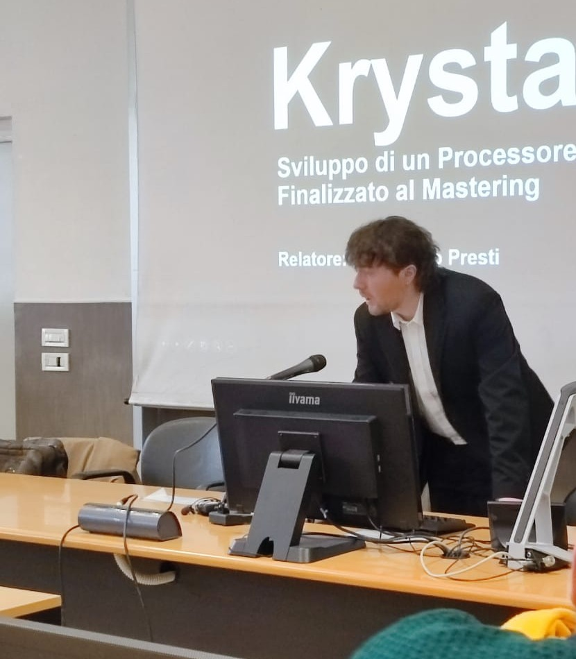

ABOUT
Hi, I'm Nick, the developer behind Krystal Dynamics.
The project began during my studies in Sound and Music Computing at the University of Milan, from which I graduated in December 2025.
I wanted to bring the precise workflow of professional tools to a wider audience by removing the cost barrier. Each plugin is built on what I learned studying the processing behind the tools I use every day, with the goal of making it accessible and easy to use.
Tools shaped by theory and testing
SUPPORT THE DEVELOPMENT
Help Krystal Dynamics keep growing.
The plugins are free to use and maintained independently. If they’re useful in your work, your support helps me keep improving them and developing new tools.
You can contribute with a one-time donation, or support the project continuously by joining the community on Patreon.